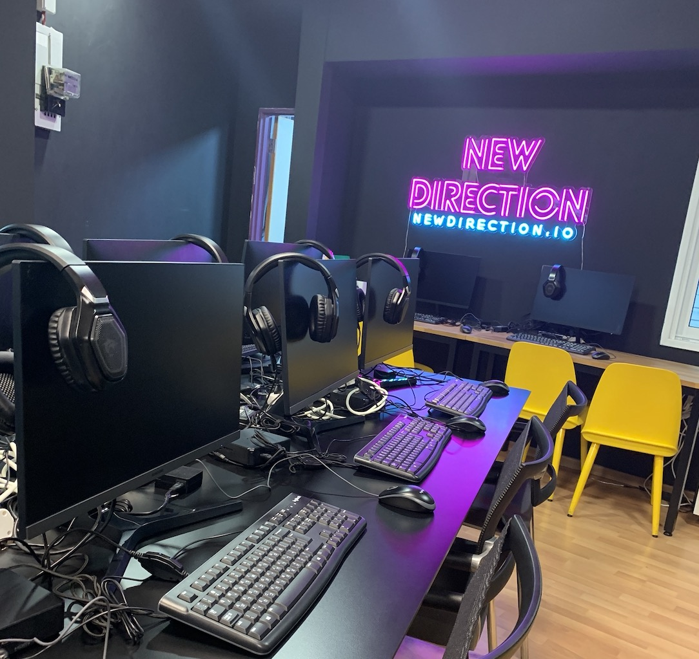

This past summer, I was living and interning in Tel Aviv, Israel! I had two internships, each for one month.In July of 2021, I interned at Substrata, a technology start-up that develops software that gives live feedback on nonverbal cues, such as the tone of your voice and the speed at which you are speaking, when in a video meeting. The goal of this software is to give you an advantage when you are on business or other important calls.
In June of 2021, I interned at a company called New Direction , a start-up that aims to create and provide high-quality, accessible education to Ethiopian Refugees living in Tel Aviv. The internship consisted of assisting with the development of the learning material, specifically focusing on teaching English.
During the summer of 2020, I worked as a waitress and barista at a local bakery, called That Little French Guy. My job consisted of taking orders from customers, bringing food to their tables, cleaning up, and making all different sorts of drinks. Other responsibilities included working the phone and the register. The biggest perk of this job was being able to take home all of the leftover baked goods at closing time!